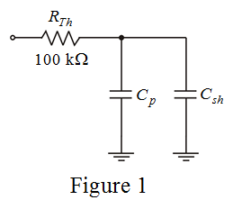

Step 1:
Consider the circuit diagram.

Step 2:
The circuit is similar to a low pass filter with additional capacitor across .
Consider when a shunting capacitor is connected, a  bandwidth of the amplifier is reduced from to .
bandwidth of the amplifier is reduced from to .
Write the expression for frequency.
Substitute  for and
for and  for in the equation.
for in the equation.
Therefore, the shunting capacitor, is .
Step 3:
Calculate the value of capacitance, .

Therefore, the value of parasitic capacitor is .
Step 4:
Consider the frequency due to parasitic capacitance is and due to effect of shunting capacitance is .
Write the expression for frequency.
Step 5:
Take the ratio of both the frequencies.
Therefore, the shunt capacitance is the parallel capacitance.